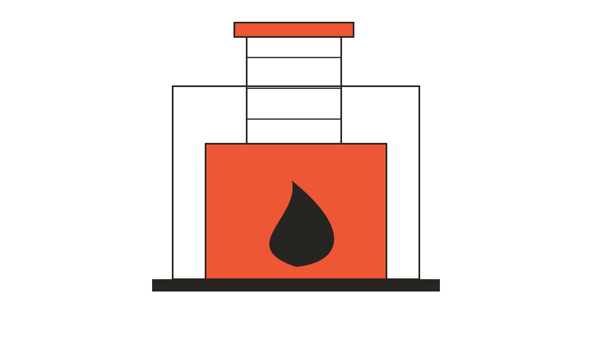
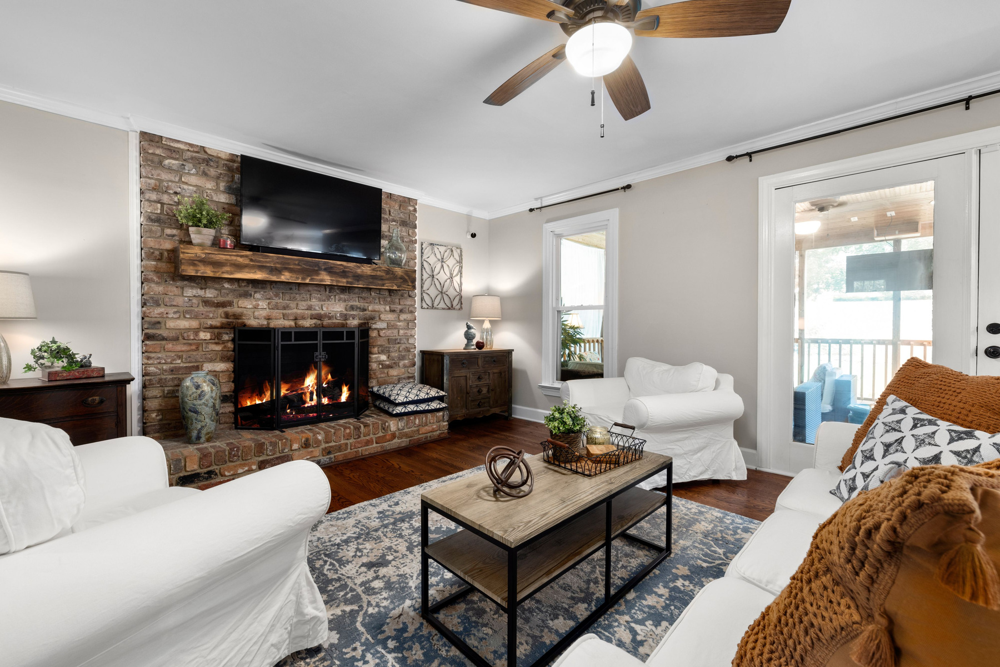
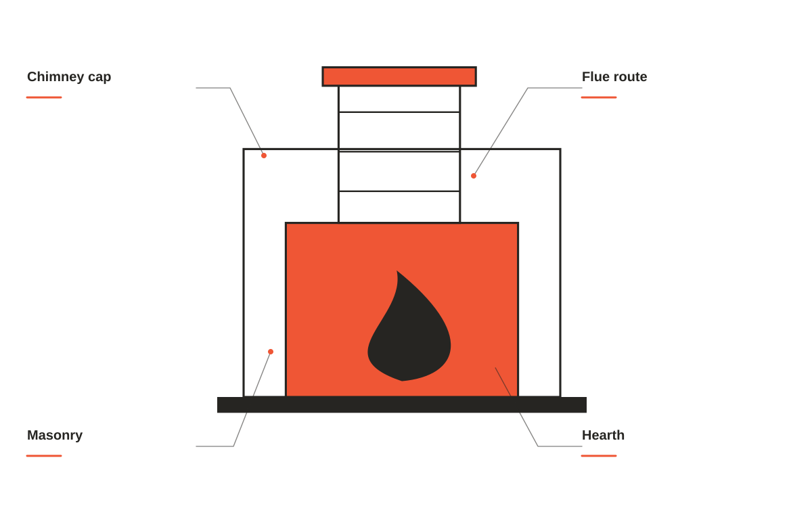
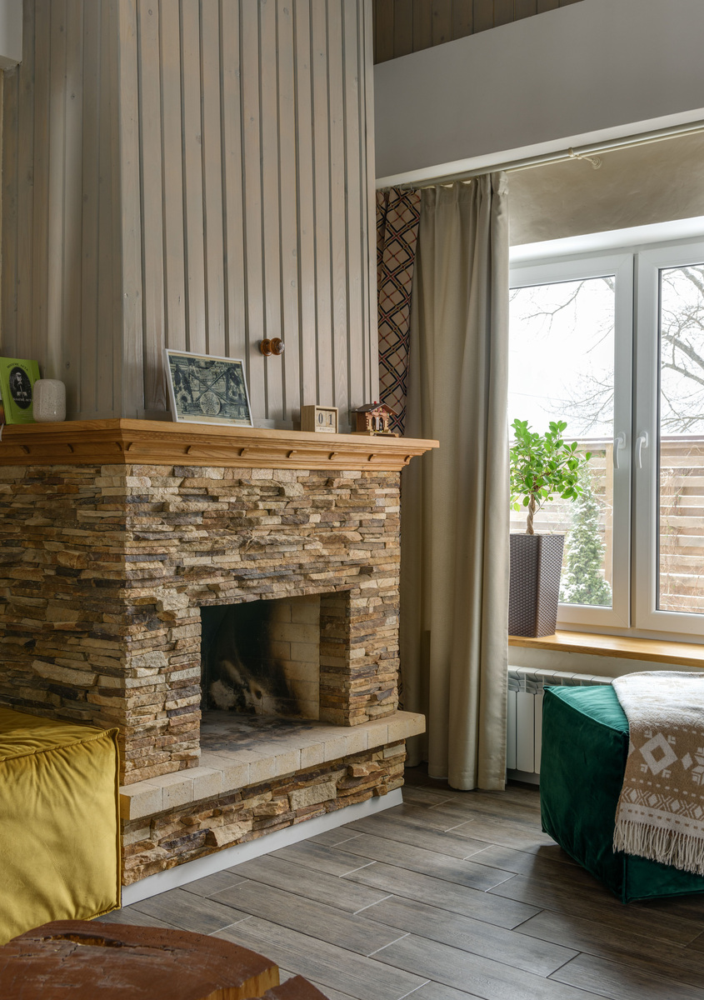
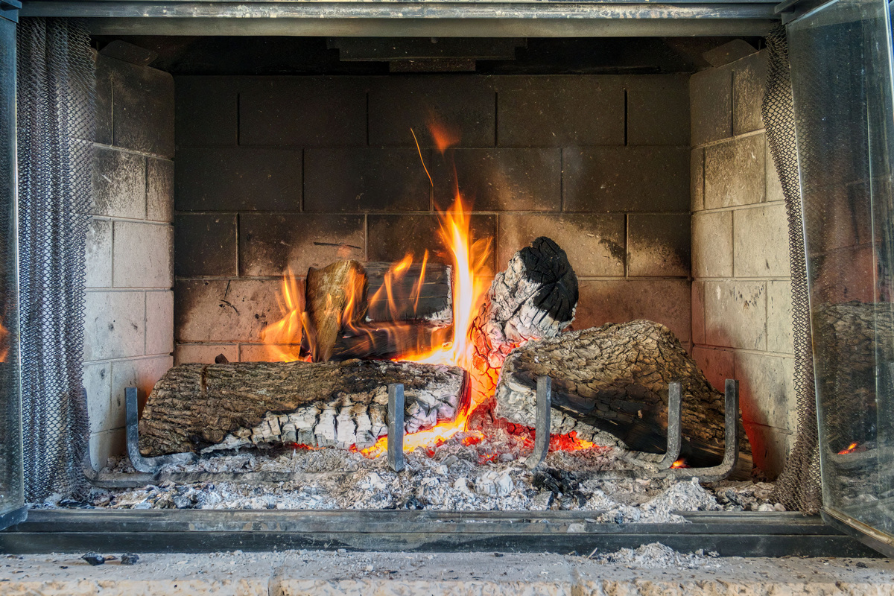
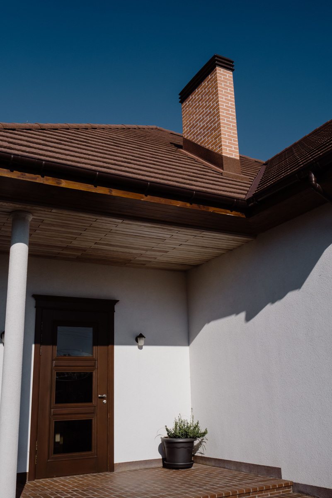

Chimney sweeping
Address soot and buildup with a cleaning scope matched to your system.

Chimney and fireplace care, with a closer look at the details between the hearth and the roof.
Plan a chimney visit ↗
Address soot and buildup with a cleaning scope matched to your system.
A closer look before deciding what the fireplace needs next.
Discuss weather protection and the details at the top of your home.
Practical attention for the place your household gathers around.
A chimney and fireplace conversation should cover the system you have, the way you use it, and the details that deserve a closer look.

EMBER & FLUE / THE DETAILS MATTERTell us about the fireplace, its use, and anything you have noticed in the room.
Discuss the inspection or cleaning you are looking for and what should be included in the visit.
Share concerns about caps, masonry, or weather exposure so those details can be part of the scope.

The most useful service starts with understanding what’s there. Share the type of fireplace, how you use it, and what you’ve noticed. We’ll discuss an appropriate visit and scope.


Start with the property, your priorities, and the details you want us to understand.
Talk through suitable options, practical access, and the work you want included.
Review the proposed scope and ask questions before deciding on the next step.
When you get in touch, a little context goes a long way. These are the details that help us start a useful conversation about your chimney & fireplace care project.
Tell us what you have in mind ↗Tell us about fireplace and system type so the conversation starts with your situation.
A few details about how often it is used help us understand what you need.
Share what you have noticed when you get in touch, including photos where useful.
Let us know about room and roof access so the proposed scope reflects your priorities.
The type of fireplace, how you use it, and anything you have noticed are useful details for planning a visit.
Tell us what you are looking for. We will explain the work included in the proposed visit before you book.
We will explain the access needed and anything to move away from the hearth before the appointment.
Chimney and fireplace care, with a closer look at the details between the hearth and the roof.